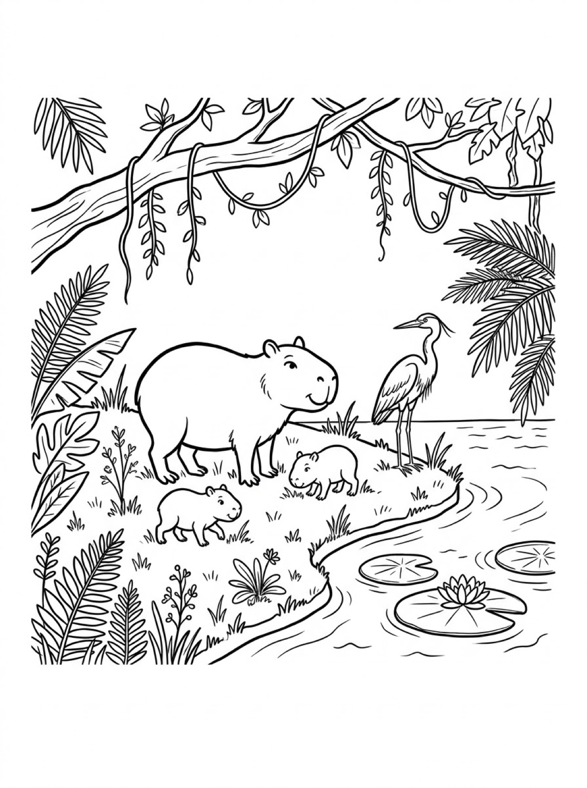
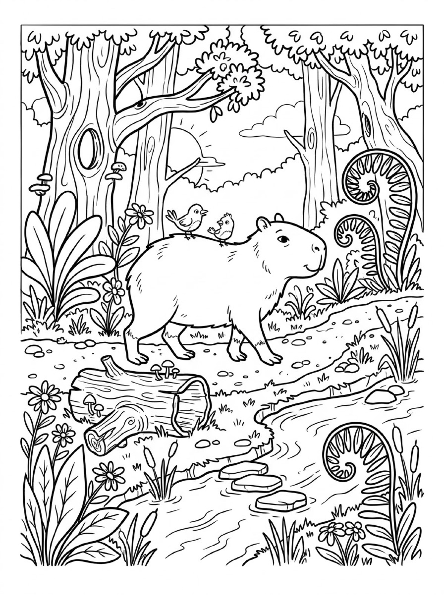

Free Capybara Coloring Pages Hot Spring, Riverbank & Forest Path Printables
These free capybara coloring pages give your child three gentle capybaras to color — one soaking in a hot spring, a mother with her pups on a riverbank, and one giving two little birds a ride through the forest. Download the set below, print at home on letter-size paper, and let the coloring fun begin. No signup needed.
Last updated: October 21, 2026
Quick Answer
Yes — this page has three free printable capybara coloring pages: a capybara soaking in a rocky hot spring with an orange on its head, a mother and two pups on a riverbank, and a capybara walking a forest path with birds on its back. Bold outlines and big spaces, made for little hands. Download, print on letter-size paper, and hand over the crayons — no signup, no cost.
At a Glance
- Ages: 3–8
- Pages: 3 free printables
- Format: Print at home, letter size
- Cost: Free, no signup
- Supplies: Crayons or markers
- Time: 10–20 minutes
🦫 Capybara Hot Spring Coloring Page

🎨 Download Your Free Capybara Hot Spring Coloring Page
A relaxed capybara soaking in a rocky hot-spring pool, a small orange balanced on its head and steam curling into the bamboo — bold outlines, big spaces, zero signup.
⬇️ Download Free Hot Spring Page 🖨️ Print Hot Spring Page🎁 Free printable for preschoolers & kids
🦫 Capybara Riverbank Family Coloring Page

🎨 Download Your Free Capybara Riverbank Coloring Page
A capybara mother and her two pups on a grassy riverbank, with a tall heron standing guard and lily pads floating by — bold outlines, big spaces, zero signup.
⬇️ Download Free Riverbank Page 🖨️ Print Riverbank Page🎁 Free printable for preschoolers & kids
🦫 Capybara Forest Path Coloring Page

🎨 Download Your Free Capybara Forest Coloring Page
A friendly capybara strolling a forest path with two small birds riding on its back, past a stream with stepping stones — bold outlines, big spaces, zero signup.
⬇️ Download Free Forest Page 🖨️ Print Forest Page🎁 Free printable for preschoolers & kids
More Coloring Pages
Tap any picture to open its theme page and download the free printable.


🦫 How To Use This Page
- Browse the three designs and pick the capybara your child will love most.
- Tap download or print under that design — the file opens full-size, ready for letter-size paper.
- Print a couple of copies so your child can try the same capybara in different colors.
- Color together with crayons or markers and display the favorites.
🦫 Why Kids Love Capybara Coloring Pages
Capybaras might be the calmest animals on Earth. They soak in hot springs, nap on riverbanks and let birds ride around on their backs without minding one bit — and that peaceful, friendly mood is exactly what draws kids to them. Every capybara on this page looks content, whether it is up to its chin in warm water or giving two small birds a lift through the forest.
That gentle mood makes these pages wonderfully repeatable. Print the same design twice and it never comes out the same — the hot spring can be blue on Monday and sunset-orange on Friday. Kids practice grip, pressure and color planning while they work, and because every version is “right,” there is no frustration when a crayon slips outside the lines.
🐾 Meet the Three Capybaras on This Page
The hot-spring capybara. A capybara soaks up to its chin in a rocky pool, eyes closed, with a small orange balanced on its head. Bamboo towers on both sides, a little waterfall splashes in behind, and curls of steam drift up from the warm water. The capybara itself is one big, bold shape surrounded by smooth boulders, which makes this the best starting page for younger colorers, while the bamboo and waterfall give older kids extra detail to enjoy.
The riverbank family. A mother capybara stands on a grassy riverbank with her two pups, while a tall heron keeps watch beside them. Lily pads and a lotus flower float on the water, and jungle vines and big leaves frame the whole scene. It is a true picture of capybara life: in South America, capybaras live in family groups near rivers and ponds, and they are strong swimmers who feel right at home at the water's edge.
The forest-path capybara. A capybara ambles along a forest path with two small birds riding on its back — something real capybaras are famous for, because other animals treat them like calm, moving furniture. A stream with stepping stones runs alongside the path, with curling fern fronds, wildflowers, tall trees and a hollow log topped with mushrooms. This is the most detailed design in the set, and careful colorers will find something new in it every time.
✏️ Capybara Coloring Tips
- Pick the coat color first. Real capybaras are sandy to reddish brown, but your child's capybara can be any color at all — there is no wrong answer.
- Try a different water in every scene. Warm spring water, a calm river and a forest stream are three chances to experiment — pale blue, leafy green, or light crayon strokes with white space left for sparkle.
- Count the animals. One capybara in the spring, three on the riverbank plus a heron, and one capybara carrying two birds — a built-in counting game for little colorers.
- Display the finished capybara. A favorite page on the fridge or bedroom door is the fastest way to get asked for the next one.
🦫 Coloring Pages for Different Ages
For ages 3 to 4, start with the hot-spring capybara. It is one big central shape with a bold outline, so little hands can color the capybara without worrying about the background. Scribbling is fine at this age — they are learning how crayons move across the page and how hard to press.
For ages 5 to 6, the riverbank family is the sweet spot. The mother and pups are still big, friendly shapes, but the heron, lily pads and floating lotus add real choices: what color is the heron's beak, and which lily pad gets the flower?
For ages 7 to 8, hand over the forest-path scene. It carries the most detail — fern spirals, mushrooms on the hollow log, stepping stones and the two tiny birds — and rewards careful coloring and patience. Older kids often spend the longest on this one.
🐾 More Capybara Fun After Coloring
After coloring, ask your child to tell you the capybara's story. Where is the forest capybara walking to? Why does the hot-spring capybara balance an orange on its head? Write their answers on the back of the page (or let them dictate while you write) and the sheet becomes a keepsake instead of a throwaway.
Keep the calm-animal theme going with the axolotl coloring pages — another gentle animal that spends its life in the water — or visit the bunny coloring pages for another quiet animal family. Print one of each and color the whole peaceful crew side by side.
🔗 More Free Printables You’ll Love
- Free Axolotl Coloring Pages Feathery-gilled salamanders in pond, log and waterfall scenes.
- Free Bunny Coloring Pages Bunnies in the garden, at the burrow and under the apple tree.
- Free Dog Coloring Pages A sheepdog, a leaf-pile puppy and a Dalmatian on the farm.
- All Free Coloring Pages Browse every free coloring page on the site, organized by theme.
❓ Capybara Coloring Pages FAQ
Are these capybara coloring pages really free?
Yes — all three designs on this page are free original printables from MomYouNeedThis. Download them, print them at home, and color — no signup and no cost.
What ages are these coloring pages best for?
Kids ages 3 to 8 get the most from this set. Younger children can start with the hot-spring capybara and color the main shapes, while older kids enjoy the detailed riverbank and forest scenes.
How do I print a coloring page?
Tap the download button under the design you want, then print the file on regular letter-size paper. The print button opens the full-size page in a new tab if you prefer to print from there.
What is a capybara?
A capybara is the world's largest rodent, from South America. Capybaras are calm, social animals that live near rivers and ponds and love to swim — which is why two of the designs on this page show them in and beside the water.
Can I make a coloring book from these pages?
Yes — print all three designs, stack them in order, and staple along the left edge. Add a cover sheet with your child's name on it for a finished homemade capybara coloring book.